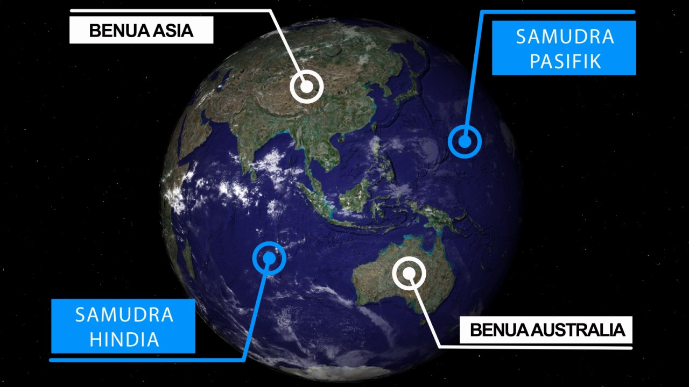

Sejarah
Nama Indonesia berasal dari berbagai rangkaian sejarah yang puncaknya terjadi di pertengahan abad ke-19. Catatan masa lalu menyebut kepulauan di antara Indocina dan Australia dengan aneka nama, sementara kronik-kronik bangsa Tionghoa menyebut kawasan ini sebagai Nan-hai ("Kepulauan Laut Selatan"). Berbagai catatan kuno bangsa India menamai kepulauan ini Dwipantara ("Kepulauan Tanah Seberang"), nama yang diturunkan dari kata dalam bahasa Sanskerta dwipa (pulau) dan antara(luar, seberang). Kisah Ramayana karya pujangga Walmiki menceritakan pencarian terhadap Sinta, istri Rama yang diculik Rahwana, sampai ke Suwarnadwipa ("Pulau Emas", diperkirakan Pulau Sumatra sekarang) yang terletak di Kepulauan Dwipantara. Nama "Indonesia" berasal dari dua kata Yunani yaitu, Indus yang berarti "India" dan kata Nesos yang berarti pulau/kepulauan, maka "Indo-nesia" berarti "kepulauan India".
Bangsa Arab menyebut wilayah kepulauan itu sebagai Jaza'ir al-Jawi (Kepulauan Jawa). Nama Latin untuk kemenyan, benzoe, berasal dari nama bahasa Arab, luban jawi("kemenyan jawa"), sebab para pedagang Arab memperoleh kemenyan dari batang pohon Styrax Sumatra yang dahulu hanya tumbuh di Sumatra. Sampai hari ini jemaah haji kita masih sering dipanggil "orang Jawa" oleh orang Arab, termasuk untuk orang Indonesia dari luar Jawa sekali pun. Dalam bahasa Arab juga dikenal nama-nama Samathrah (Sumatra), Sholibis (Pulau Sulawesi), dan Sundah (Sunda) yang disebut kulluh Jawi ("semuanya Jawa").
Geografis

Indonesia memiliki sekitar 17.504 pulau (menurut data tahun 2004), sekitar 6.000 di antaranya tidak berpenghuni tetap, menyebar sekitar katulistiwa, memberikan cuaca tropis. Pulau terdapat penduduknya adalah pulau Jawa, dimana lebih dari setengah(65%) populasi Indonesia. Indonesia terdiri dari 5 pulau besar, yaitu: Jawa, Sumatra, Kalimantan, Sulawesi, dan Irian Jaya dan rangkaian pulau-pulau ini disebut pula sebagai kepulauan Nusantara atau kepulauan Indonesia.
Indonesia memiliki lebih dari 400 gunung berapi dan 130 di antaranya termasuk gunung berapi aktif. Sebagian dari gunung berapi terletak di dasar laut dan tidak terlihat dari permukaan laut. Indonesia merupakan tempat pertemuan 2 rangkaian gunung berapi aktif (Ring of Fire). Terdapat puluhan patahan aktif di wilayah Indonesia.
Wisata
Kekayaan alam Indonesia, menjadi magnet yang selalu mampu menarik minat para wisatawan. Dari mulai pegunungan hingga laut, dari dataran tinggi hingga lembah-lembah dan ngarai semuanya mempesona. Sebanyak kurang-lebih 61 tempat wisata di Indonesia yang pastinya tidak kalah indahnya dengan negara-negara lain.
Mandalika, Nusa Tenggara Barat
Jika pulau Lombok memang dikenal akan keindahan gili-gilinya, Mandalika juga nggak mau kalah. Untuk menarik perhatian dunia, pemerintah tengah membangun resort dan insfrastruktur lainnya. Bahkan kecantikan pantai-pantainya nggak kalah menarik dengan yang lainnya. Lokasi ini juga menjadi tempat sempurna untuk berselancar. Terutama di Pantai Ubrug. Tak hanya punya pemandangan yang begitu menawan, ombak besarnya pun cukup menantang.
Pantai Sumurtiga, Sabang
Jelajah destinasi wisata di Indonesia yang pertama kita mulai dari kota Sabang, Daerah Istimewa Aceh. Tepatnya di Pantai Sumurtiga. Pantai ini memiliki pasir putih dengan daerah pesisir yang panjang. Kecantikannya semakin sempurna ketika berpadu dengan air laut berwarna biru muda. Banyak yang menilai bahwa pantai Sumurtiga ini tak kalah cantik dengan pantai-pantai di Hawaii.
Danau Toba, Sumatra Utara
Danau yang terbentuk karena aktivitas gunung berapi ini disebut sebagai danau vulkanik paling cantik di Indonesia. Danau Toba dengan pemandangan di sekitarnya, tampil sebagai salah satu primadona Sumatra Utara. Selain itu, wisatawan juga bisa betah menjelajah hutan pinus, menikmati air terjun dan berendam pemandian air hangat yang letaknya tak jauh dari Danau Toba.